A scientific instrument for formulating, training and benchmarking neural intrusion detectors under online, open-world and multi-modal assumptions.
The paper's central point is deliberately modest: SmartVille is not a new stand-alone detector chasing leaderboard accuracy. It is a coherent research blueprint — and an open-source proof of concept — for studying how deep-learning NID should be conceived once learning happens live, on traffic streams, in a world where new attacks appear after deployment.
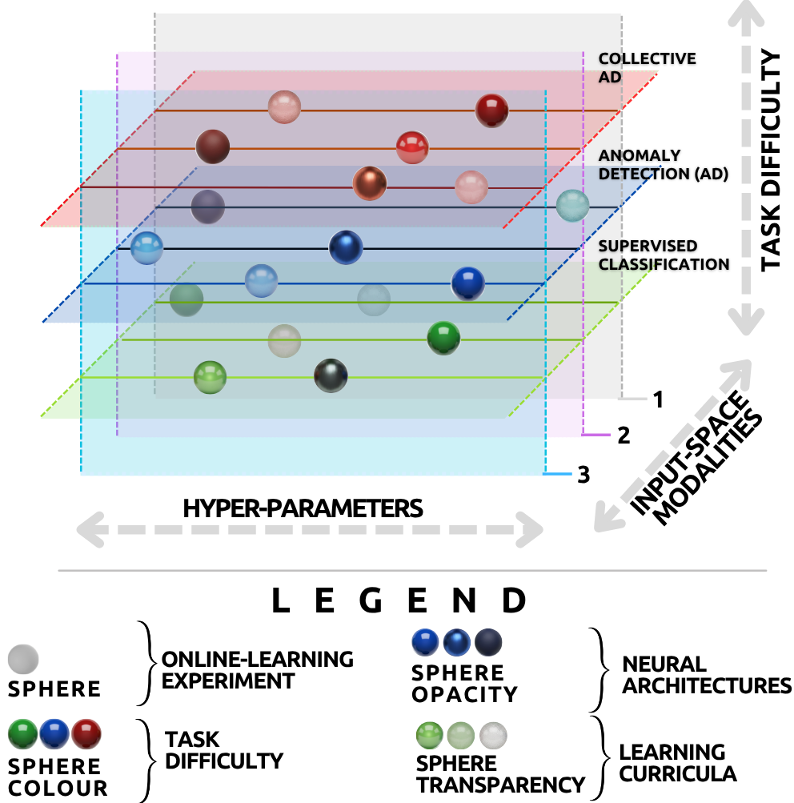
It is a framework: a principled way to design, train and benchmark adaptive intrusion detectors under realistic operating assumptions, cleanly separating the theoretical contribution from its software.
It is not a proprietary detector that must prove universal superiority. As the paper states, "the relevant question is not whether it demonstrates superiority to any other algorithm, but whether it provides a coherent and reproducible methodology for testing how different algorithms, curricula, modalities and neural operators behave when genuinely unseen attacks arise after deployment."
Deep learning has produced a large body of work on Network Intrusion Detection (NID), yet much of it treats the problem as static, offline classification of pre-recorded, bulk-preprocessed datasets. Deployed NID is inherently dynamic: traffic arrives as a stream, attack patterns evolve after deployment, useful evidence is spread across multiple modalities, and models must stay light enough for constrained environments like the IoT.
These requirements are tightly coupled, so isolated algorithmic tweaks are not enough. SmartVille addresses the gap by offering a framework rather than a single detector — organised around four research questions.
How should deep-learning NID be formulated when learning and inference happen online, from traffic streams, rather than from offline bulk-preprocessed datasets?
How can such systems be designed for open-world conditions, where previously unseen attack behaviours emerge during deployment and require continual adaptation?
How can raw traffic, traffic statistics and node-level measurements be integrated into one end-to-end differentiable pipeline without heavyweight modelling?
What kind of controllable experimental environment is needed to study these questions reproducibly and benchmark neural architectures under realistic conditions?
SmartVille formalises machine-learning NID through two complementary tasks. The point is not to advocate a specific detector, but to characterise the two ways evidence has to be handled in an open world: recognising what the model already knows, and organising what it does not.
Assigning inputs to already-internalised attack categories. SmartVille embeds this inside an online-learning paradigm and uses Prototypical Learning — a metric-based meta-learning approach that classifies by distance to learned class prototypes. New attack types can be added at inference time by simply computing a new prototype, with no full retraining: a form of live, growing threat intelligence.
Known knownsReal anomalies are heterogeneous and concurrent — several distinct novel behaviours at once. So the object of interest is not a scalar anomaly score per sample, but the latent partition among anomalous samples. C-AD asks not merely "is this novel?" but "does this belong to the same novel mechanism?"
Structured unknownsIf learning and inference are assumed to happen online, the input itself should be assembled online, from modalities that can be observed at the same time. SmartVille treats state-encoding as stream processing — no bulk preprocessing, and end-to-end trainable throughout. Three feature domains emerge as foundational (with room for more).
A compact behavioural summary over short horizons — packet counts, byte counts, flow duration — well suited to online adaptation when storing or reprocessing raw traces is undesirable. Aggregated into sliding time-series windows.
Flow statistics can suppress structure visible only in packet contents. The framework makes selective byte sampling — not exhaustive deep packet inspection — the relevant design principle. Headers are anonymised so the model can't memorise endpoints.
Some attacks show up as side effects on end hosts. CPU load, memory, interface load act as complementary evidence, encoded as a parallel input stream — testing the hypothesis that multi-modal evidence improves discrimination in an open world.
Once open-world deployment is assumed, labels can no longer be a fixed table decided before training. SmartVille's dynamic labelling continually (i) re-assigns patterns across the known / unknown-train / unknown-test partition, and (ii) routes incoming samples to training or evaluation buffers according to their current partition status.
These buffers also form the support batches used by prototypical learning, and can reorganise themselves as the partition changes — keeping the model aligned with the latest threat intelligence under concept drift.
SmartVille adopts the Encode–Process–Decode (EPD) organisation: three composable modules connected in series, each with a single responsibility. This is a research abstraction, not a claim that a fixed three-block pipeline is universally optimal — its point is to make different inductive biases comparable while keeping the whole pipeline end-to-end differentiable.
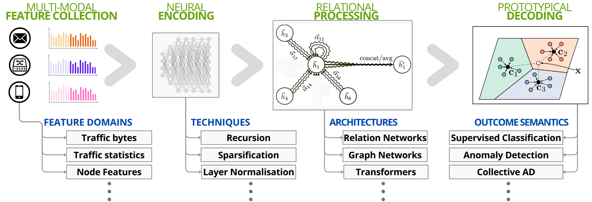
Replaces bulky handcrafted preprocessing with a trainable representation map — point-wise, convolutional, recurrent or temporal-convolutional. It keeps the geometry plastic enough to absorb new evidence while relating known, emerging and anomalous structure coherently.
Performs structured reasoning over relations among samples. Its job is kernel regression: predicting a binary adjacency matrix over a batch. Transformers, GNNs and relation networks are natural fits because they encode pairwise interactions through attention or message passing.
Maps processed representations to task-specific decisions. For classification, it scores queries by distance to class prototypes; for C-AD it outputs the predicted kernel directly, evaluated with structural metrics (Adjusted Rand Index, Normalised Mutual Information).
A query is classified by its distance to learned class prototypes — the mean embedding of each class's support set. This embodies the relational bottleneck: focusing on relations between samples rather than absolute feature values, which brings data efficiency and robustness to distribution shift. Output dimensionality is dynamic, so new attack classes can appear at run-time without retraining from scratch.
Clustering is written as a set-to-set function captured by a kernel (adjacency) matrix K ∈ {0,1}n×n, where Kij = 1 when samples i and j belong to the same cluster. Inferring K from data is a differentiable, supervised objective — no non-differentiable clustering routine interrupts gradient-based online adaptation, and the number of anomaly classes need not be fixed in advance.
Self-attention effectively approximates a soft kernel matrix; training minimises the discrepancy between predicted and ground-truth kernels (e.g. via a UMAP-inspired or weighted binary-cross-entropy loss).
To learn collective anomaly detection end-to-end, the model must see unknown-pattern structure during optimisation while genuinely unseen structure is reserved for evaluation. SmartVille adopts the ASAP meta-learning setup, partitioning the space of traffic patterns 𝒫 into three roles.
Labelled patterns available for direct, class-supervised classification. These are the "known knowns" the model can recognise outright.
Patterns withheld from direct supervision; their hidden labels build the ground-truth kernel, giving relational supervision over "unknownness" as a training signal.
Entirely held-out OOD patterns, used only at evaluation, that test whether the learned relational bias transfers to novelty as a generalisation regime.
This turns C-AD into a supervised meta-learning task: the model learns not to memorise specific patterns, but the underlying principles of inter-cluster separability and intra-cluster cohesion. "Known" and "unknown" here are epistemic labels about what the learner has access to — not properties of the traffic itself.
The open-source implementation shows the framework's assumptions can be operationalised in a reproducible research environment. The paper is careful here: it should be read as one concrete realisation of the framework's requirements — online learning, multi-modal observation, continual incorporation of new threat intelligence — not as a claim of a definitive or universally optimal engineering solution.
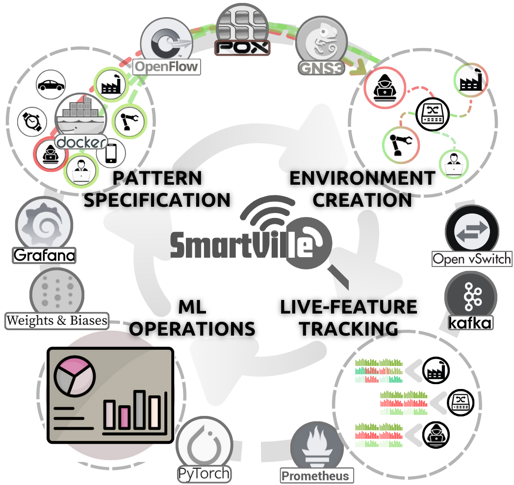
.pcap traces so specific behaviours can be triggered at precise times — ideal for studying curricula, drift and dynamic labelling.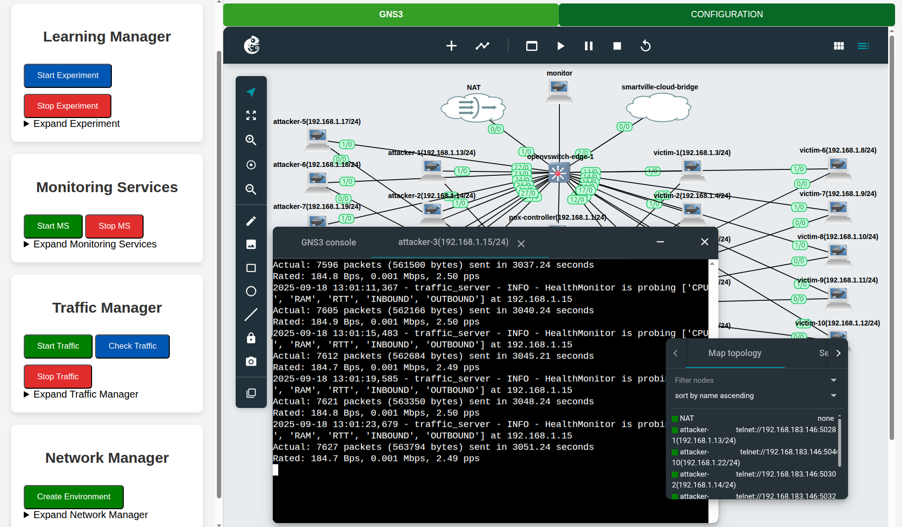
Everything — code, configs and experiment logs — is version-controlled in the public repository, with an example dashboard at wandb.ai/jfcevallos/SMARTVILLE_2.0.
These use cases are, explicitly, baseline studies — not evidence that the paper endorses one fixed pipeline as the final answer to NID. Their purpose is to show how the framework supports agile, theory-driven comparison under controlled online conditions: change the curriculum, change the modalities, change the neural modules — same end-to-end differentiable organisation. Every curve below aggregates five random seeds, so both average behaviour and run-to-run variability are visible.
Same known classes, but different assignments of patterns to 𝒫Utrain and 𝒫Utest. All three curricula reach strong, stable scores on the directly-supervised parts of the task; the informative separation appears on the held-out OOD clustering metric.
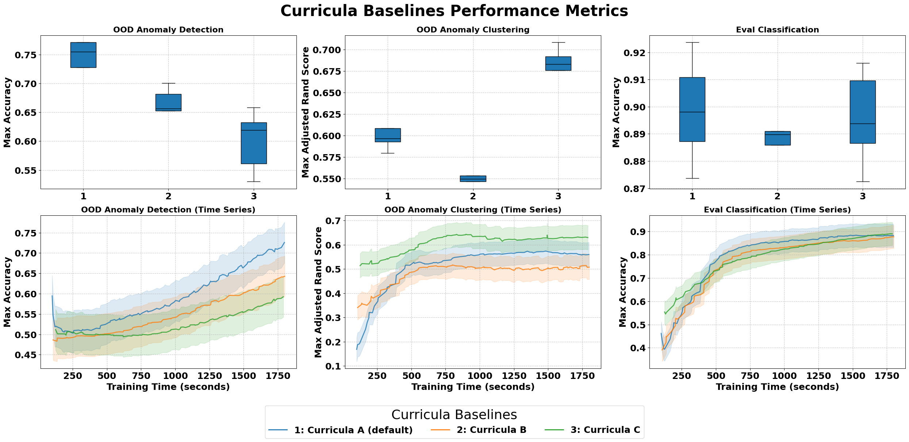
An ablation over three modality configurations: flow statistics + node features, flow + raw bytes, and the full multi-modal set. The full configuration gives the strongest, most stable behaviour — packet-level and host-level evidence contribute information beyond flow statistics alone.
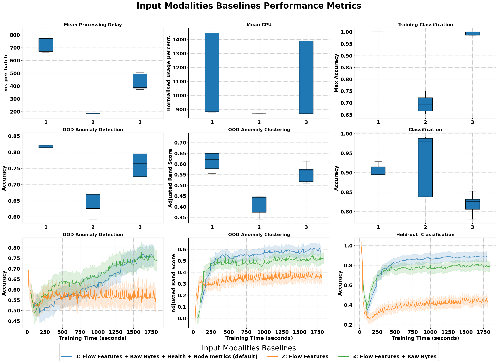
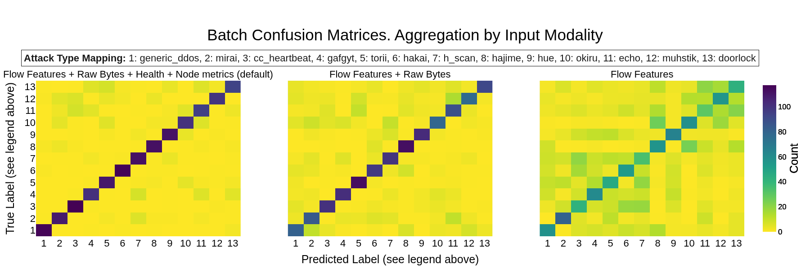
Same data split, modalities and protocol; only the relational operator and the kernel-regression loss change — the Distance Kernel Regressor (a Siamese-style similarity network on the L1 distance) vs the Dot-Product Kernel Regressor, each with a UMAP-inspired loss or a weighted binary-cross-entropy loss.
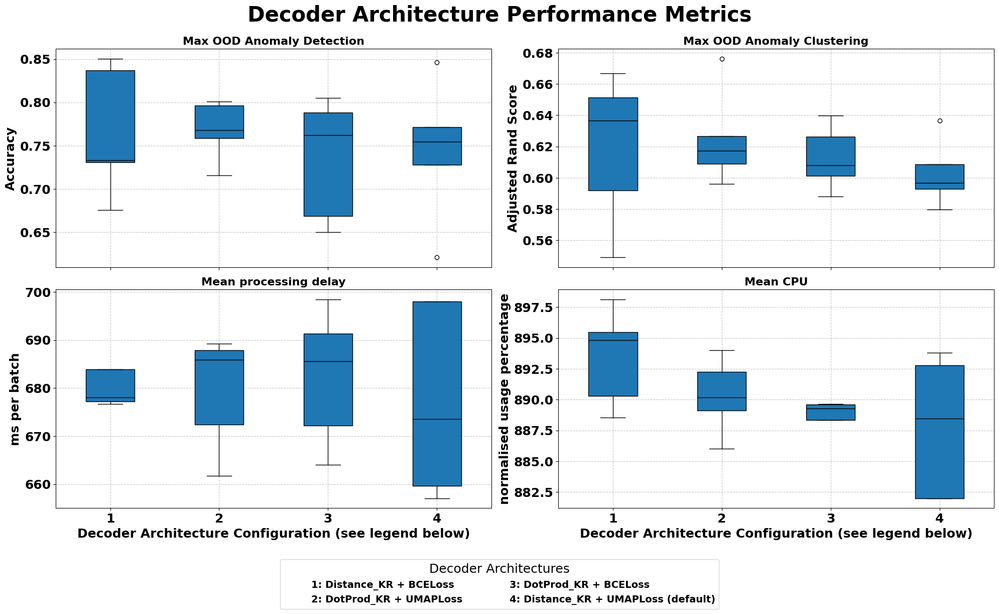
Because SmartVille is a measuring instrument, it can surface findings that cut against intuition. Scaling the neural modules under genuine online training — inference and learning at once, no offline multi-epoch pretraining — degrades generalisation. This is a humble but useful empirical result, not a performance boast.
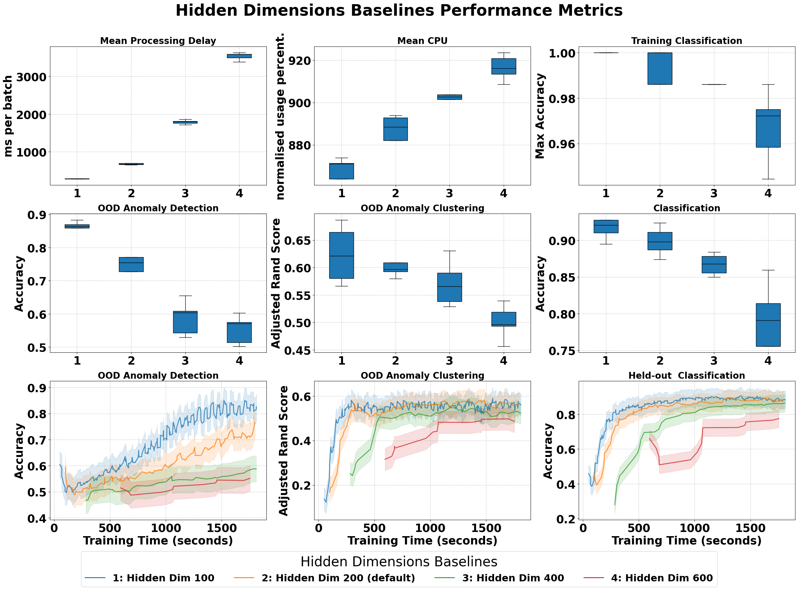
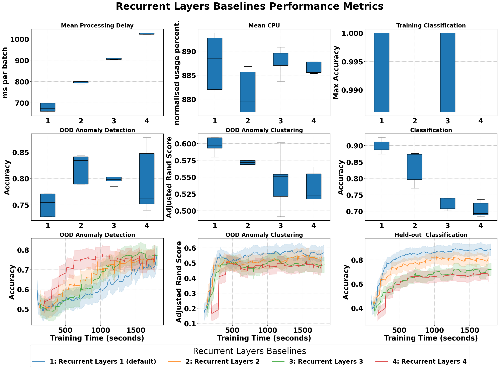
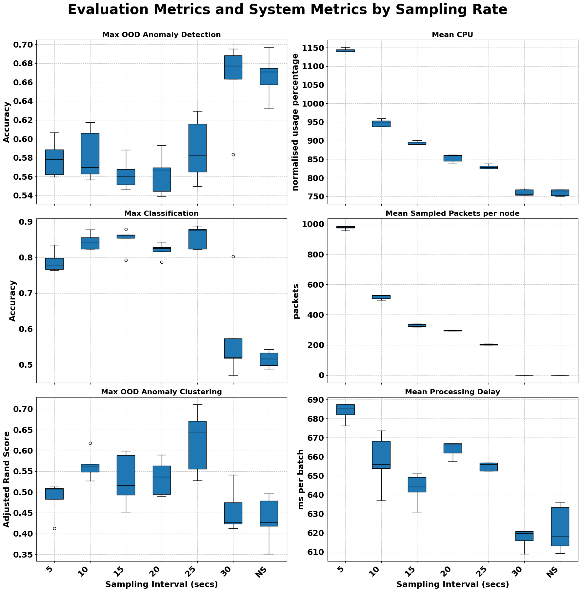
The paper repeatedly narrows the scope of its own numbers: the sampling-interval and processing-delay results characterise the present proof-of-concept stack, where inference is deliberately a blocking call to expose end-to-end latency for measurement.
They are not claims that the framework must run inference synchronously in production — asynchronous or decoupled pipelines could be adopted without changing the theoretical role of the observations. This restraint is exactly the point: SmartVille reports what it measured, in the setting it measured it.
To reproduce realistic behaviour, the implementation is initialised with the public Aposemat IoT-23 dataset. Flows are filtered by attacker source IP (unless noted); source/destination IPs and transport ports are masked online before raw bytes reach the neural modules. Each pattern is assigned to a dedicated attacker or honeypot node so it can be triggered independently.
| Pattern | Type | IoT-23 capture | Flows extracted |
|---|---|---|---|
| Hajime | Trojan / worm (Linux exploit) | 9.1 | ~50,000 |
| Hakai | DDoS botnet (Mirai variant) | 8.1 | ~12,000 |
| Gafgyt | DDoS botnet | 60.1 | ~50,000 |
| Mirai | DDoS botnet (IoT) | 34.1 | ~24,000 |
| Torii | C&C + info-gathering | 20.1 | ~50,000 |
| Muhstik | Worm (Mirai-based) | 3.1 | ~50,000 |
| Okiru | C&C botnet (ARC targets) | 7.1 | ~50,000 |
| Horizontal Scan | Reconnaissance | 1.1 | ~50,000 |
| C&C HeartBeat | C&C heartbeat | 7.1 | ~1,500 |
| Generic DDoS | DDoS (C&C context) | 7.1 | ~50,000 |
Smart-lock flows from Honeypot 7.1 — reproduced by two nodes in the reference topology.
Smart-LED flows from Honeypot 4.1 — reproduced by one node.
Personal-assistant flows from Honeypot 5.1 — reproduced by one node.
Flow-extraction code is open-sourced; see the repository's iot23_dataset/ and data_supply_chain.MD, and the
original captures at stratosphereips.org/datasets-iot23.
If the SmartVille framework, its formulation, or its open-source implementation are useful to your research, a citation is greatly appreciated.
@article{cevallos2026smartville,
title = {SmartVille: A Framework for Realistic Deep Learning-based
Online Network Intrusion Detection},
author = {Cevallos M., Jes\'us F. and Rizzardi, Alessandra and
Sicari, Sabrina and Coen-Porisini, Alberto},
journal = {Journal of Network and Systems Management},
year = {2026},
note = {In press},
publisher = {Springer}
}
The collective-anomaly-detection curriculum builds on the ASAP meta-learning setup:
@article{cevallos2024asap,
title = {ASAP: Automatic Synthesis of Attack Prototypes,
an online-learning, end-to-end approach},
author = {Cevallos, Jesus and Rizzardi, Alessandra and Sicari, Sabrina
and Coen-Porisini, Alberto and others},
journal = {Computer Networks},
pages = {110828},
year = {2024},
publisher = {Elsevier}
}